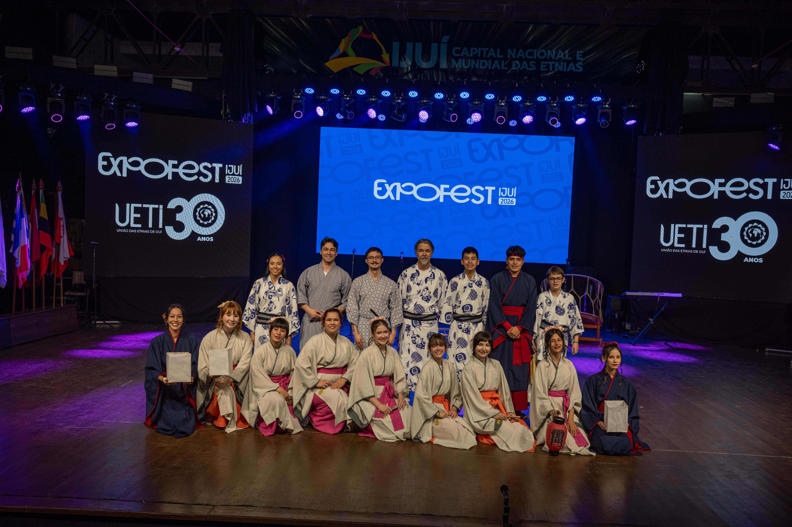
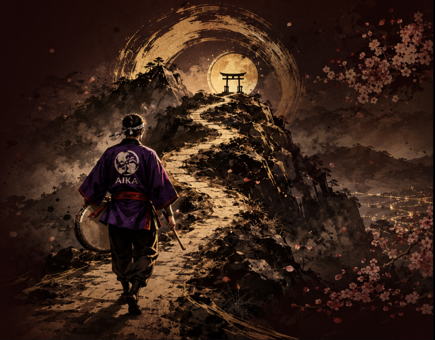

O grupo
O Grupo de Danças Japonesas Aika 愛歌 nasceu em 2018 dentro da Associação Regional de Cultura Japonesa Sakura, que representa a etnia japonesa na União das Etnias de Ijuí (UETI). Reúne jovens e adultos, descendentes ou não, unidos pelo interesse na cultura japonesa. O nome Aika significa “canção do amor”.
A estreia foi no Baile das Etnias de abertura da ExpoIjuí Fenadi, em outubro de 2018, com uma coreografia inspirada na vida dos pescadores japoneses no mar. Desde então o grupo se apresenta todos os anos na Expofest, levou a dança Sakura Sakura ao UETI Celebra o Japão e subiu ao palco do Festival do Japão, em São Paulo, o maior evento de cultura japonesa do país, em 2022 e novamente em 2026, com dança e taikô.
O repertório mistura o tradicional e o contemporâneo: nos festivais, o grupo leva coreografias mais tradicionais; em Ijuí, arrisca adaptações com sotaque brasileiro e danças mais ritmadas, inspiradas em anime. As coreografias contam com a orientação de Luisa Hayashi. A associação mantém ainda o Junko, grupo infantil de danças japonesas.

不適合者のやり方
Nosso jeito
Futekigōsha no Yarikata · “O jeito de quem não se encaixa”
Ijuí fica longe das grandes comunidades japonesas do Brasil, e poucos de nós são descendentes. Sem mestres ou escolas tradicionais por perto, aprendemos como dá: assistindo vídeos, observando com atenção nos festivais, conversando com quem sabe mais e ensaiando juntos. Foi assim que chegamos a uma forma de fazer que junta diferentes estilos de dança e de música, e que carrega o nosso sotaque.
Futekigōsha no Yarikata não é uma recusa da tradição. É só o reconhecimento de que chegamos a ela por outro caminho. Temos orgulho de quem somos, respeito por quem guarda essa cultura há gerações e vontade de seguir aprendendo, do jeito que podemos.
Aprendendo como podemos. Dançando com o que somos.

Taikô太鼓
Tambores japoneses tocados em conjunto, com força, ritmo e coreografia.
Danças tradicionais日本舞踊
Bon odori, Sakura Sakura e coreografias autorais que vão do tradicional ao ritmado.
Apresentações公演
Festivais do Japão no RS, em São Paulo e em Brasília, Expofest em Ijuí e até a Argentina.
Por onde passamos
Cada palco foi também uma oportunidade de aprender. Alguns dos lugares que nos receberam:
Festivais do Japão
Festival do Japão RS (Esteio), Festival do Japão de São Paulo, Festival do Japão de Brasília, Festival do Japão de Nova Petrópolis, Mostra do Japão de Gramado e Kawasuji Fest, em Atibaia/SP.
Cultura e folclore
Fiesta Nacional del Inmigrante (Oberá, Argentina), Theatro São Pedro (Porto Alegre), Festival de Folclore de Campina das Missões, Mostra Mercosul de Dança (Porto Xavier), Procissão das Criaturas (Santa Cruz do Sul), Expofest, Fenadi e Natal das Nações.
Comunidade
Apresentações beneficentes para a AAPECAN, a AFIMM e a APAE de Jóia, visitas ao Noblesse Residencial Geriátrico e uma apresentação com tradução em Libras no Encontro de Cegos e Surdos do CAIS.
Oficinas e palestras
Workshop de taikô na colônia japonesa de Ivoti, oficinas de origami, palestras sobre imigração e gastronomia japonesa na Unijuí e aulas de japonês no projeto Guardiões da Cultura, da UETI.
Um dos nossos integrantes esteve entre os cinco brasileiros selecionados para uma formação da JICA em Yokohama, no Japão, sobre o ensino da língua japonesa como língua de herança. O que ele aprendeu lá voltou para Ijuí, nas aulas de japonês da comunidade.
Cidades em que já estivemos
De Ijuí para o Rio Grande do Sul, o Brasil e a Argentina. O dragão dourado do Kinryu, sempre atrás do seu tama (a pérola), passa por cada cidade que já nos recebeu e volta para casa.
Rio Grande do Sul
- Ijuí Nossa casaExpofest (antiga Fenadi) e seu Baile de Abertura, todos os anos desde 2018 · Abertura da sede da UETI, 2022
- Augusto PestanaFormatura de kung fu, 2025
- Campina das Missões1º Festival do Folclore, 2022
- CatuípeFormatura de kung fu, 2025
- Coronel BarrosFormaturas de kung fu, 2024 e 2025
- Cruz Alta2º Anime Players, 2018 · Fenatrigo, 2023
- Esteio10º Festival do Japão do RS, 2023
- Frederico WestphalenExpofred, 2025
- Gramado1ª Mostra Japão de Gramado, 2023
- IvotiFeira na Colônia Japonesa de Ivoti, 2022 e 2023
- JóiaApresentação beneficente para a APAE
- Não-Me-ToqueAnimetoque, 2023
- Nova PetrópolisFestival do Japão de Nova Petrópolis, 2018 e 2019
- Passo FundoEvento de Líderes BSBIOS, 2023
- Porto AlegreFestival do Japão RS, 2019 e 2022 · Theatro São Pedro, 2022
- Porto Vera CruzII Encontro de Dança Internacional, 2025
- Porto Xavier2ª Mostra Mercosul de Danças, 2023
- Santa Cruz do SulProcissão das Criaturas, 2022 e 2023
- Santo ÂngeloFeira da Praça, 2019
São Paulo
- AtibaiaXVIII Kawasuji Fest
- São Paulo23º Festival do Japão, 2022 · 25º Festival do Japão, 2024
Distrito Federal
- Brasília11º e 12º Festival do Japão de Brasília, 2023 e 2024
Misiones · Argentina
- Oberá43ª Fiesta Nacional del Inmigrante, 2023
Vídeos
Galeria
Mais fotos em breve.
Integrantes
Dezesseis pessoas que dançam, tocam taikô e seguem aprendendo juntas.
Ver todos os integrantes